Projet de fin de diplôme · 2026
Comment accompagner la construction du jeune adulte dans une société où l’identité se définit davantage par ce que l’on consomme que par ce que l’on souhaite être ?
Une application qui intercepte les tentations d’achat, aide à formuler des objectifs et s’appuie sur un compagnon pour maintenir la motivation.

(Constat)
Les objets ne servent plus seulement à répondre à des besoins.
- 01
La consommation est devenue un moyen de construction identitaire
Aujourd’hui, les objets permettent aussi d’exister socialement et de se définir aux yeux des autres.
- 02
Les habitudes de consommation influencent durablement les comportements
Les mécanismes d’habitude, renforcés par les plateformes et les interfaces numériques, poussent à des achats automatiques et répétés, souvent sans réelle prise de recul, ce qui nous empêche de réfléchir à plus long terme.
- 03
Les jeunes sont encouragés à « paraître adultes » par les objets avant de se construire eux-mêmes
Téléphone, voiture ou logement deviennent des symboles de réussite et d’entrée dans l’âge adulte, parfois avant même le développement d’une identité personnelle stable.

(Verbatims)

« L’IA est une aide formidable au quotidien, mais j’aime quand on sent encore la sensibilité et l’intention humaine derrière l’écran. »

« J’ai encore craqué et commandé un nouvel ordi sur un coup de tête… Résultat, ça va être vraiment chaud de partir en vacances cet été. »
(Idéation)
Dessiner les pistes avant de choisir la forme.
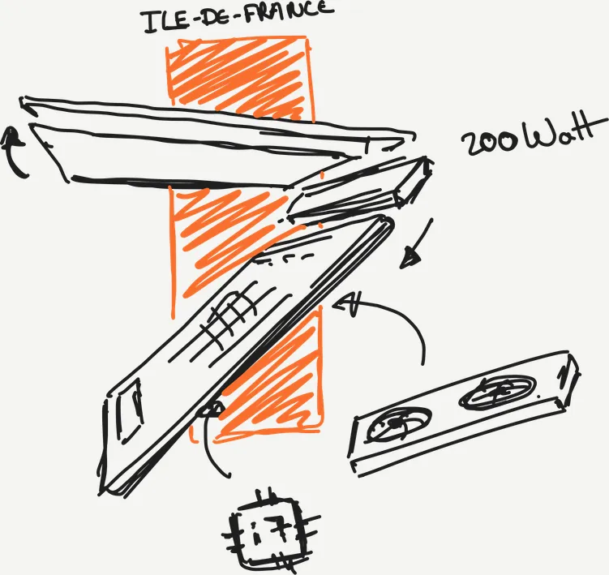
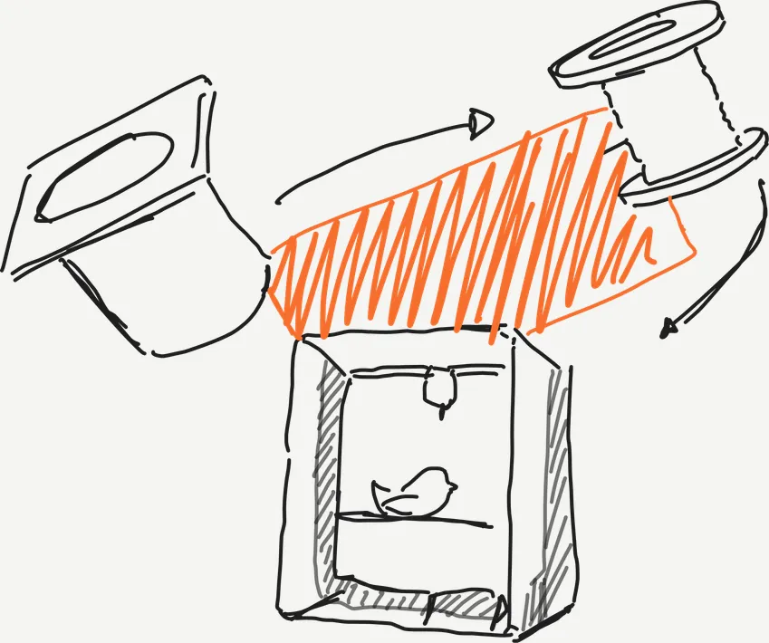
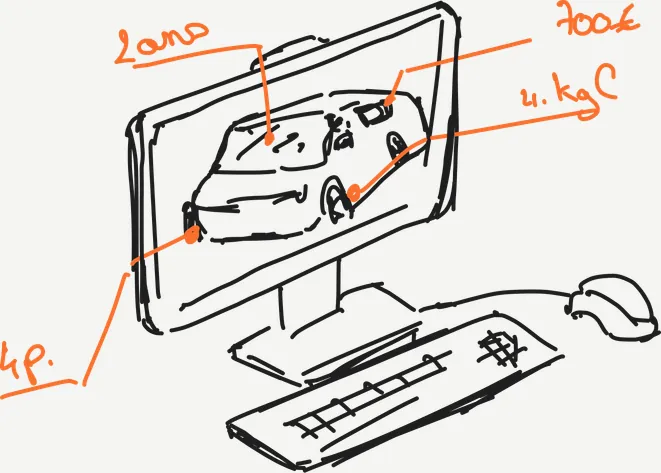
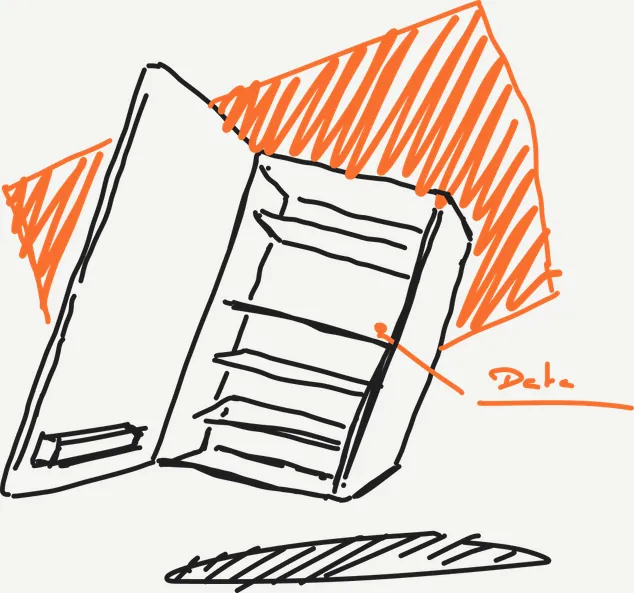
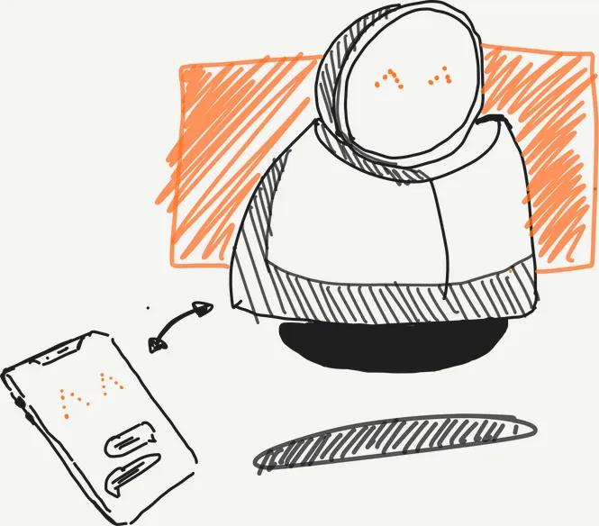
(Solution retenue)
Pourquoi proposer une solution digitale ?
- 01
Le terrain de lutte est devenu numérique
L’e-commerce et nos impulsions se concentrent sur nos écrans. Pour être efficace, l’outil de protection doit exister exactement là où le désir se crée, sans créer un énième objet physique inutile.
- 02
Combattre les algorithmes à armes égales
Les techniques de manipulation (dark patterns) s’adaptent et s’optimisent grâce à l’IA. Seule une solution logicielle évolutive peut analyser, détecter et bloquer ces pièges dynamiques en temps réel.
- 03
Intercepter au point de non-retour
Là où un objet agit trop tôt ou trop tard, une application permet de créer une friction positive au moment très précis de la bascule cognitive, cassant le cycle de l’achat compulsif.
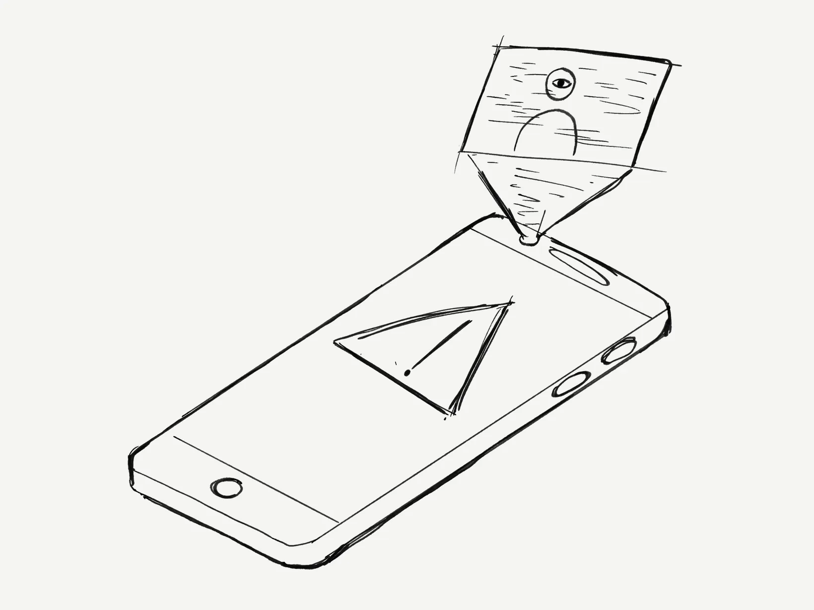
(Benchmark)
Se situer face à opal, one sec, Noom, Fabulous, Forest et scored.
Usage principal, consommation ciblée, moment d’intervention (avant, pendant, après), capacité à sensibiliser, à favoriser l’esprit critique et risque d’app fatigue.
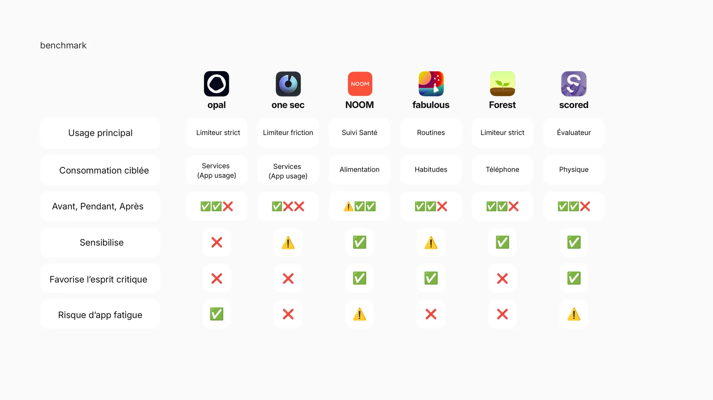
(Tests)
Du POC à la v2 bis, chaque version passe entre les mains des utilisateurs.
Quatre itérations testées. Les retours ont ramené l’onboarding vers du concret dès le premier écran et donné plus de place au compagnon dans la décision d’achat.
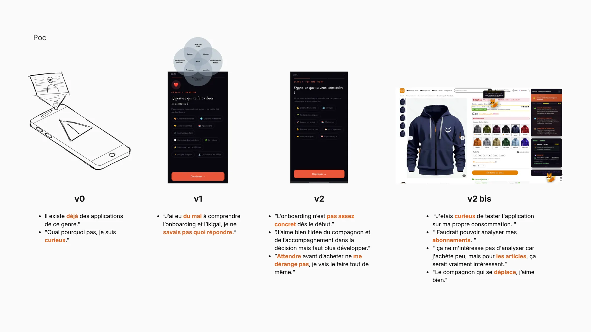
(Objectifs)
Fixer des objectifs SMART.
Spécifique, Mesurable, Atteignable, Réaliste, Temporel : l’onboarding transforme une envie floue en objectifs concrets, en quatre étapes.
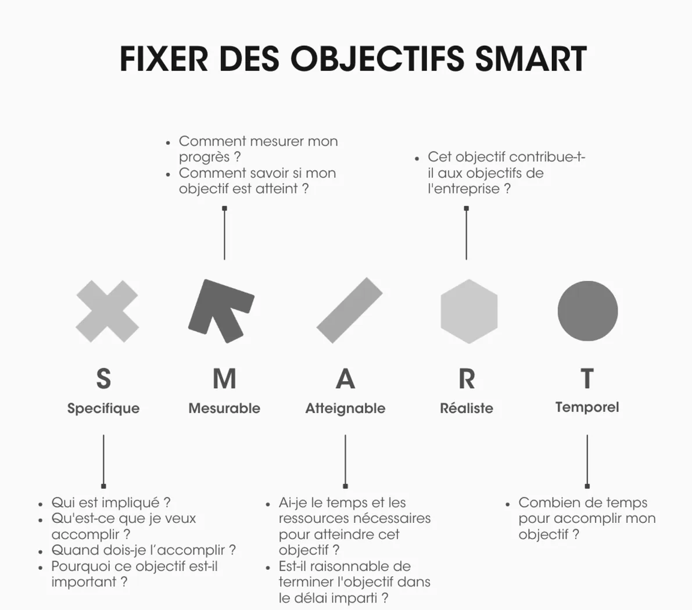
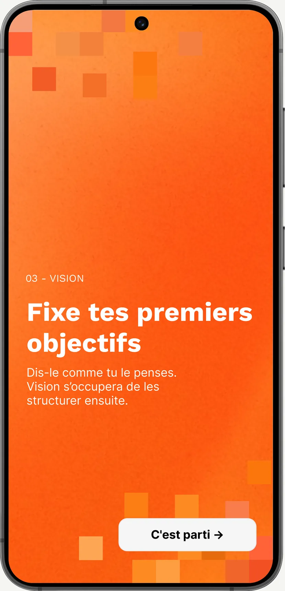
(Système)
Vision s’insère entre l’utilisateur et son environnement de consommation.
Le conseiller IA intercepte, analyse et recommande, pour transformer une décision automatique en choix conscient.
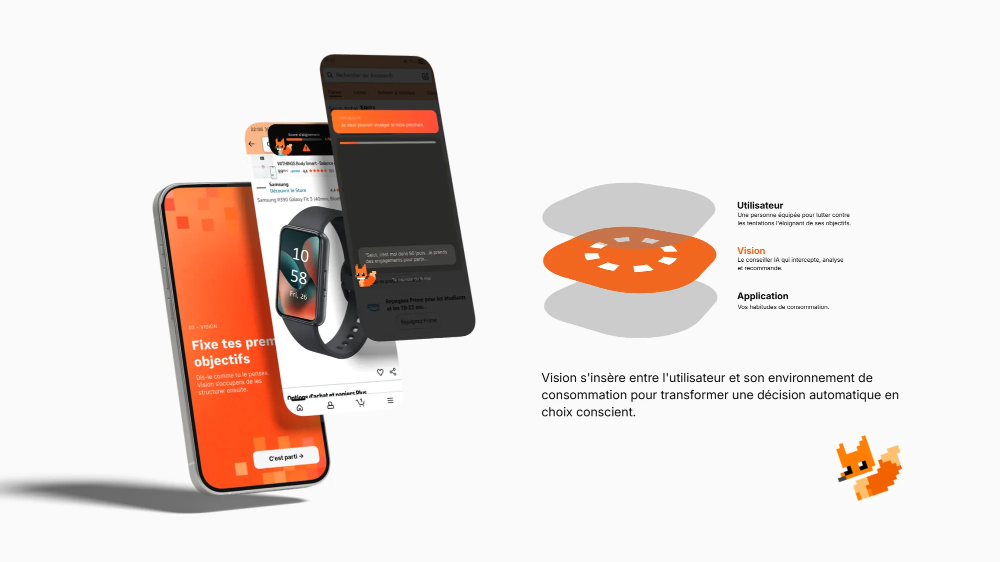
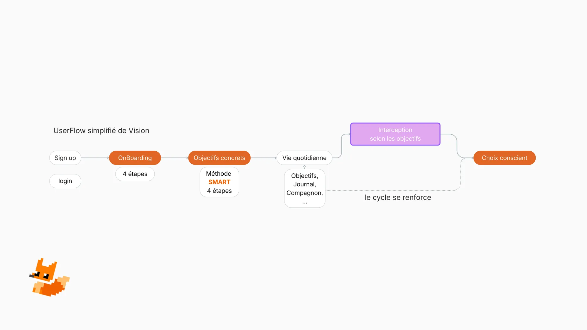
(Compagnon)
8 jours sans craquage.
La gamification permet de lutter contre la perte de motivation. Changer ses habitudes peut être compliqué : avoir un attachement émotionnel à son tamagotchi donne envie de progresser ensemble.
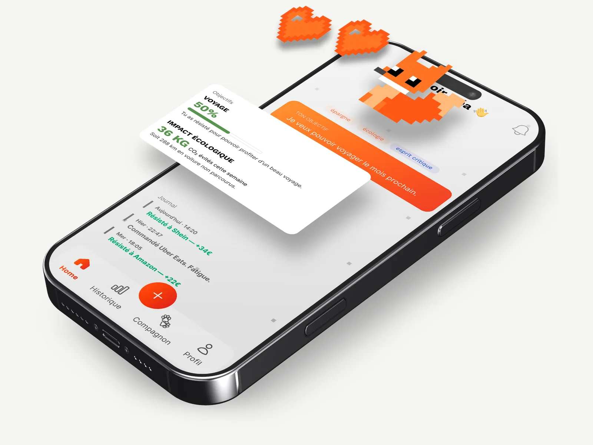